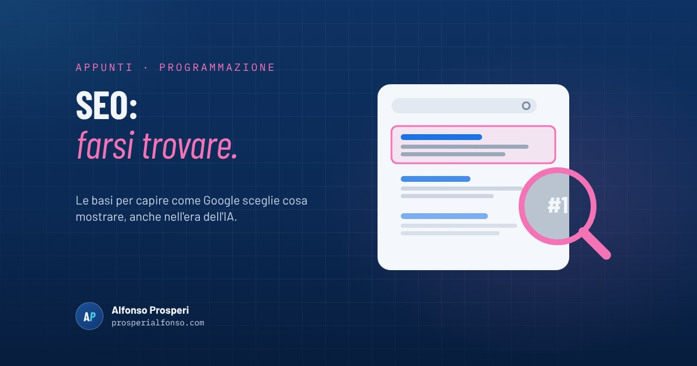

Quando cerchiamo qualcosa su Google, il primo risultato raccoglie molti più clic di quelli che stanno in fondo alla pagina. La SEO (dall'inglese Search Engine Optimization, ottimizzazione per i motori di ricerca) è l'insieme delle cose che si fanno per aiutare un sito a comparire tra i risultati non a pagamento, quelli chiamati "organici". Vediamo le basi.
Come Google sceglie i risultati
In modo molto semplificato, il lavoro di Google si divide in tre fasi:
- Scansione. Dei programmi automatici visitano continuamente le pagine del web e seguono i link da una pagina all'altra.
- Indicizzazione. Google legge il contenuto delle pagine e le archivia nel suo indice, una specie di enorme catalogo.
- Posizionamento. Quando qualcuno fa una ricerca, Google sceglie dall'indice le pagine più utili e affidabili per quella domanda e le mette in ordine.
Se una pagina non viene trovata o non viene capita, semplicemente non compare. La SEO serve prima di tutto a evitare questo.
Cosa conta davvero
- Contenuti utili. Google stesso consiglia di scrivere pensando alle persone, non al motore di ricerca: testi originali, chiari, che rispondono davvero alla domanda di chi cerca.
- Parole giuste. Usare le parole che le persone usano davvero quando cercano, non solo quelle del gergo tecnico.
- Affidabilità. Chi scrive, da quale esperienza parla, se altri siti autorevoli lo citano con un link.
- Un sito che funziona bene, veloce e leggibile anche dal telefono.
Cosa cambia con l'intelligenza artificiale
Dal 2025 anche in Italia Google mostra in cima a molte ricerche le AI Overview, un riassunto scritto dall'intelligenza artificiale con i link alle fonti, e c'è la modalità AI, dove si fanno domande come in una conversazione. Per molte domande semplici le persone trovano la risposta senza cliccare su nessun sito.
Per chi ha un sito questo non cancella la SEO, ma sposta l'attenzione: secondo le indicazioni di Google, per comparire anche tra le fonti di queste risposte valgono le stesse regole di sempre. Contenuti originali e affidabili, pagine che Google riesce a leggere, informazioni corrette e aggiornate. Quello che perde valore sono i testi generici, scritti solo per "riempire" la pagina.
SEO e pubblicità non sono la stessa cosa
La SEO riguarda i risultati gratuiti e richiede tempo: i risultati arrivano in settimane o mesi. Gli annunci a pagamento, quelli segnati come "Sponsorizzato", fanno parte della SEM e portano visite subito, ma solo finché si paga. Spesso conviene usarle insieme.
Nella seconda parte trovi le cose pratiche da fare sul proprio sito, passo per passo.